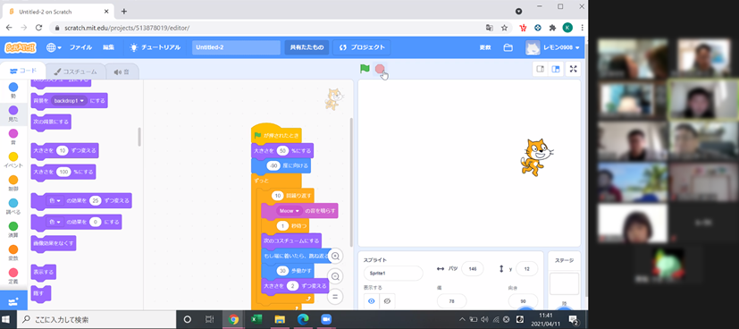
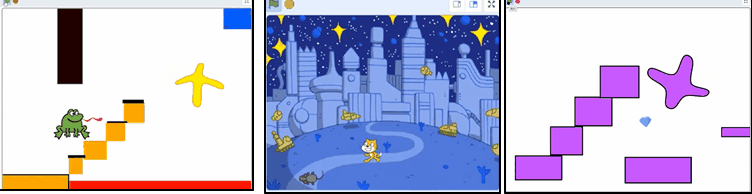
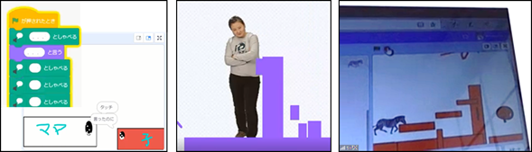
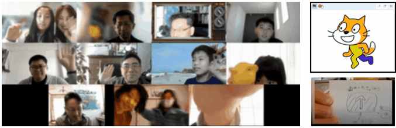

2021-04-11
8歳から10歳まで6家族の親子が参加してくれました。プログラミング未経験の入門ニンジャと3～5回くらいのスクラッチ初心者を中心にみんなで前回の続き「クモのアスレチック」を復習しました。オンラインでのプログラミングは、会議ツール（Zoom）にみんなが集まって、スクラッチの画面を共有してアニメやゲームを制作します。最初はパソコンの操作に戸惑いもありますが、慣れればスムーズにコミュニケーションができます。不安な方には個別に臨時パソコン教室も予定しますのでご安心ください。

本日の子どもたちの作品（例）は、こちら（↓）。みんな独創的なセンスで作ってくれるので嬉しい。楽しい。すごい。

まだ２ヶ月のニンジャもも、ついに自分でＡＩの音声合成を調べて自らアニメを制作してくれました。キャラクター選びのセンス！面白い。

今回も賑やかでとっても楽しかったです。また会おうねー。
